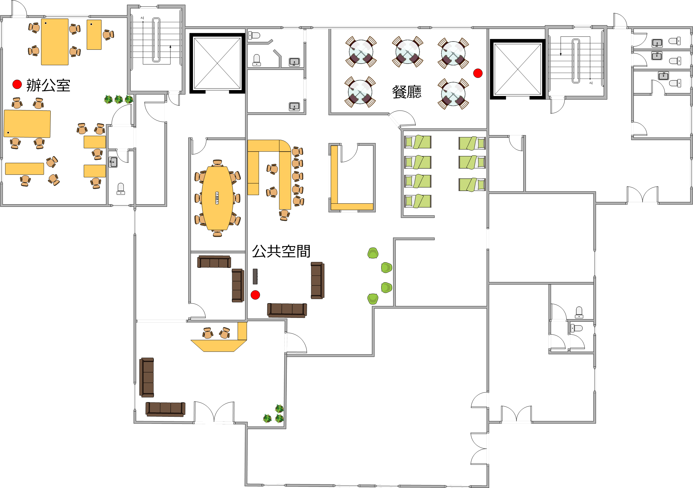
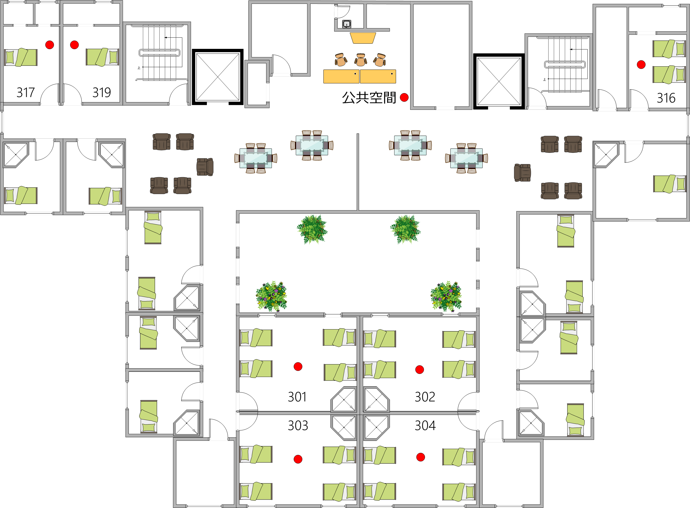

空氣盒子平面圖
Home
大台北
承康護理之家
聖若瑟失智老人養護中心
恆安老人養護中心
師大進修推廣學院
師大分部
師大林口校區
桃園
內壢國中
宜蘭
國立陽明大學附設醫院
羅東聖母醫院
三星鄉公所
宜蘭教養院
聖嘉民老人長期照顧中心
懷哲復康之家
高雄
民生醫院附設護理之家
聖功醫院附設護理之家
聖功醫院
高雄佳醫護理之家
新立護理之家
財團法人獎卿護理展望基金會護理之家
聖若瑟
1F 平面圖

2F 平面圖
3F 平面圖

4F 平面圖